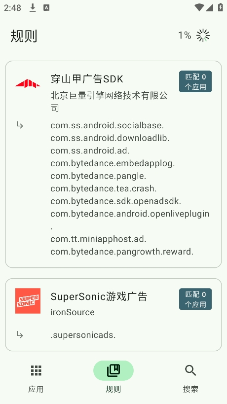

安卓组件拦截工具横评，Bloker 为什么值得单独拿出来说
从 Intent Firewall 到 SDK 规则库，Bloker 在安卓组件拦截这个类目里走出了一条跟别家不太一样的路。用过三四款同类工具后，聊聊它的定位、差异化优势和不适合谁。
安卓生态里有一个常年灰色的小众类目：组件级拦截。跟系统自带的"禁用应用"不是一回事——那是整个应用一刀切，而组件拦截是把应用拆成一块块（activity、service、receiver、provider），精准关掉你不想让它干的那部分，保留要用的功能。这个类目不大，但用户忠诚度极高，因为真能解决问题。
我前后摸过三四款同类工具，从早年靠 shell pm disable 的简单方案，到后来利用 Shizuku 权限做批量操作的，再到 Bloker——它的官网上关于 Intent Firewall 的介绍让我眼前一亮。先说结论：如果你是那种"已经 root、想精细化控制每一个应用"的用户，Bloker 大概率是你最终会落脚的那一个。原因不是它功能最多，而是它在几个关键设计上想得比别家深。
同类工具的格局先铺个底
组件拦截工具大致分三代：第一代是纯 PM 模式，直接调用 pm disable-component 改系统组件状态；第二代加上了 Shizuku 作为免 root 替代；Bloker 属于第三代，把 Intent Firewall（意图防火墙）拉进来当主拦截通道，PM 和 Shizuku 退居二线或组合模式。
格局上没什么可争的——能做到组件级拦截的工具本来就少，用户群体也小。但 Bloker 在这个有限的选择里做了几个别家没有的决定。
差异化一：Intent Firewall 是真的护城河
绝大多数同类工具的拦截逻辑都是改组件的 enabled/disabled 状态。Bloker 也能这么干，但它主推的是 Intent Firewall——不碰组件状态，而是在 Intent 分发层拦截。
这个区别听起来很技术，实际体验差距很大。PM 模式改了组件状态之后，应用自己是知道的——有些大厂应用检测到某个组件被禁用，会想尽办法"复活"它（典型的比如重新注册 receiver、或者用反射绕过检查）。IFW 模式下组件在系统层面显示的是 enabled，但任何要启动它的 Intent 都被拦了——应用根本察觉不到，也就不会去复活。

而且 Bloker 允许 IFW 和 PM 组合使用。我自己主要对付的是几款大厂视频应用，开屏广告那个 service 用 PM 关了，过一周它又自己起来——换成 IFW + PM 双通道之后，再也没复活过。代价是规则文件会多一份，但对有 root 的用户来说这根本不是事。
差异化二：SDK 规则库省了至少一半的摸索时间
刚接触组件拦截的人最痛苦的环节就是：应用里几十上百个组件，到底关哪个？
Bloker 的做法是维护一套公开的 SDK 规则库。它会自动识别应用里嵌入了哪些 SDK——穿山甲、AdMob、优量汇、极光推送、友盟 Bugly、华为 HMS……然后给这些 SDK 的组件打上标记，告诉你哪些是广告 service、哪些是追踪 receiver、哪些是核心组件别碰。
这个标记不是玄学，是真有用。举个砍广告的实战：先打开应用跑一遍记下广告场景（开屏几秒弹、播放完插横幅），回 Bloker 搜"穿山甲"，命中后按 service → activity → receiver 的优先级逐个关，每关几个就杀应用重启验证一次。有规则库的标记，你不会把支付 SDK 的组件跟广告 SDK 的搞混，也不会误杀厂商 HMS 的核心组件导致系统功能异常。

差异化三：切换控制器不丢规则
这个点看起来不起眼，但用过同类工具的人都懂其中的坑。之前用别的工具，从 PM 模式切到 Shizuku 或者反过来，经常出现"之前关的组件没了一半"或者"状态显示错乱但实际还在拦"的情况。Bloker 做了自动翻译——读取当前所有禁用规则，翻译成新控制器的形式（IFW 规则文件或 PM 组件状态），无缝应用。
唯一的小注意：从 IFW 切回 PM 时，IFW 规则禁用的组件会被翻译回 PM 的 enabled 状态——因为两套东西，切换时 Bloker 清掉旧控制器的影响。这个行为在 Bloker 的文档里写得很清楚，我反而觉得这是诚实的设计，不是 bug。
它的取舍：不是所有人都该选
说了这么多好，也得讲 Bloker 的代价。
第一，上手门槛偏高。 SDK 规则库帮你省了组件识别的时间，但真正执行起来仍然需要你理解 service、receiver、activity 分别是什么、关掉会影响什么。厂商 HMS 的组件、跟支付 SDK 绑定的广告组件、推送 SDK 里同时承担应用内消息的 receiver——这些场景需要判断力，不是点一下"全部关"就完事。Bloker 提供了规则备份和"一次只关 1~2 个"的安全建议，但判断力还得你自己有。
第二，不是完全免 root。 Shizuku 模式可以免 root 用 PM 通道，但 IFW 模式需要 root 才能生效——Intent Firewall 是 Android 系统的底层机制，不开放给第三方应用。从下载页看，Bloker 也没打算在免 root 这件事上做妥协，它的核心设计就是围绕 root 用户展开的。如果你设备没 root、也不想折腾 Shizuku，Bloker 的核心优势就用不上，不如直接找一个免 root 的简单方案。
第三，推送场景要权衡。 关掉推送组件效果立竿见影——后台不再维持长连接、省电省流量、不会被推送唤醒。但社交聊天、游戏活动、好友请求这些核心场景依赖推送，关了等于自断功能。Bloker 不会替你做决定，它只把组件列表摊开告诉你每个都负责什么。
选购结论：三类用户对号入座
应该选 Bloker 的：有 root 权限、想精细化控制应用行为、已经被大厂应用的广告/推送/后台唤醒烦了、愿意花半小时学习组件类型和风险判断的人。如果你是那种刷 XDA 论坛知道 PM disable 是什么、开过 Shizuku、理解 Intent Firewall 的老安卓玩家——Bloker 就是为你做的。
可以考虑但不必强求的：没有 root 但装了 Shizuku、主要需求就是关掉几个推送通道或广告 SDK 组件的人。PM 模式也够用，Bloker 的规则库仍然有价值，只是少了 IFW 这层护城河。
不建议折腾的：只想关掉某个应用或者系统自带禁用就能满足的人。Bloker 的学习曲线和风险判断成本，在你不需要精细控制的时候都是额外负担——系统"禁用"、通知权限、自启动管理，这些现成的开关简单得多。
最后一句
跟很多同类工具在国内靠论坛散养、更新不透明不同，Bloker 的维护节奏和文档质量在这个小众类目里属于比较稳的那一档。如果你已经翻过了 PM 模式的墙，想往上走一步——Bloker 值得你花时间。这套资料我同步到了GitHub、Gitee、GitCode三个仓库，国内访问哪个顺手用哪个。